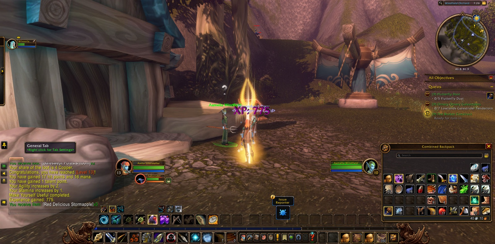
Axilla Interstellar set out from Shen'dar Village with the errand called Taming the Beast, and at Windsong Lake she found a fellow Hunter named Winterland. They joined forces there, and Winterland stayed beside her for the rest of the road. At the lake Axilla recovered the Enchanted Gyrozephyr, the first piece of The Broken Construct. She fell once in the Shen'dar Highlands and soon went on. In Valanaar she completed Taming the Beast, and with it Unwelcome Spirits, The Fate of the Den, Aid For The Refugees and The Fate of a Loved One.
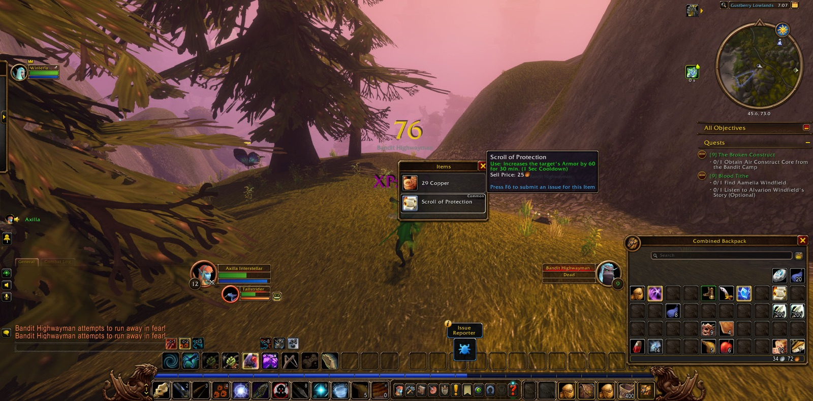
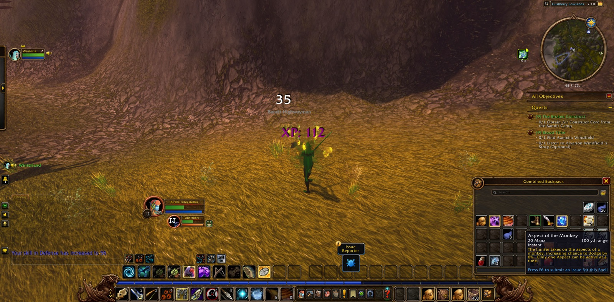
From Valanaar she went down into the Gustberry Lowlands, where the Bandit Highwaymen lay in her path. She took the Air Construct Core from the Bandit Camp and stopped several times along the way to take a picture. In Windfield Orchard she found Aamelia Windfield, which ended the errand of the Blood Tithe. Then she gave herself to the work of the place. For Make Yourself Useful she drove off the Hungry Bandits and gathered ten Ripe Stormapples, and there she came into her thirteenth level. After that she hunted the Ornery Galestriders for their tenderloins and the Flutterflies for their dust. She carried the Construct back to Valanaar and saw it mended, and she rode on to Fairweather Stables.
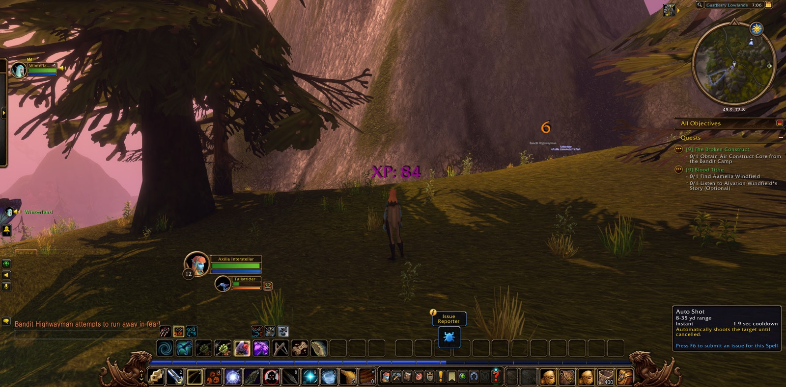
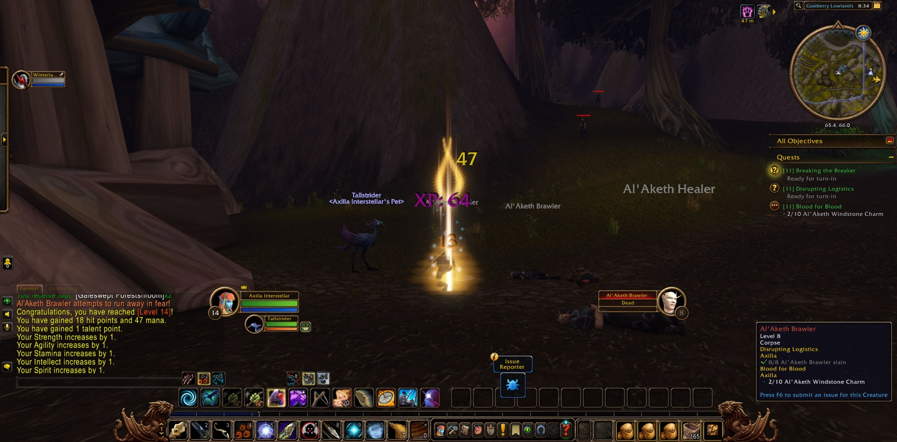
The bandits had not finished with the Orchard. Axilla gathered seven Blood-Stained Bandit Masks from the hills and brought them to Aamelia Windfield. Then she followed Aamelia and made her final stand beside her in Standing Our Ground, and afterwards carried the news back to Valanaar. On A Firm Response she went out and confronted Belathaan Brightwish. Then she took up In Service of Zephras and Blood for Blood, and went east to the East Pylon Watchtower. Below the tower the Al'Aketh held the field. She cut down their Healers and Brawlers until their supplies were broken, and she slew Commander Belguilos, which completed Breaking the Breaker. There she came into her fourteenth level, and that moment too was set down in a picture. She gathered ten Al'Aketh Windstone Charms from their Pillagers and Preachers, and Blood for Blood was finished.
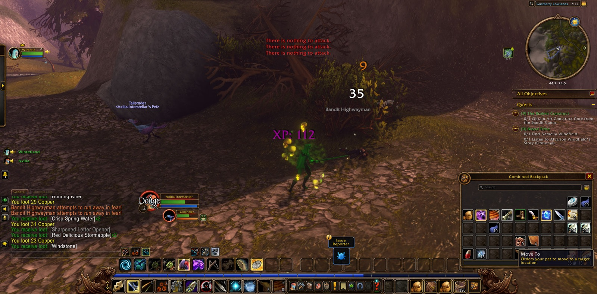
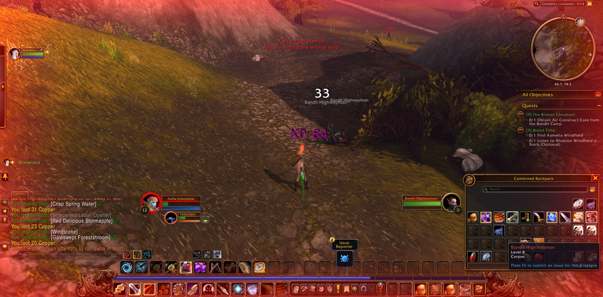
In Valanaar she answered the High Elder's Request, and was sent after The Turncoat. She went back up into the Shen'dar Highlands, slew an Al'Aketh Assassin there, and found the secluded house and the Al'Aketh Turncoat hiding in it. From there she brought a glowing crystal down to Talanaanis Shadowsong in Valanaar. That was Unfortunate News. She learned what she could from the crystal, and so the Cult's True Plans came to light. Then she took up Desperate Times and spoke with Valennia Stormfist. There Axilla laid down her bow for a while, with Winterland still beside her and the road through Zephras Isle still running on.
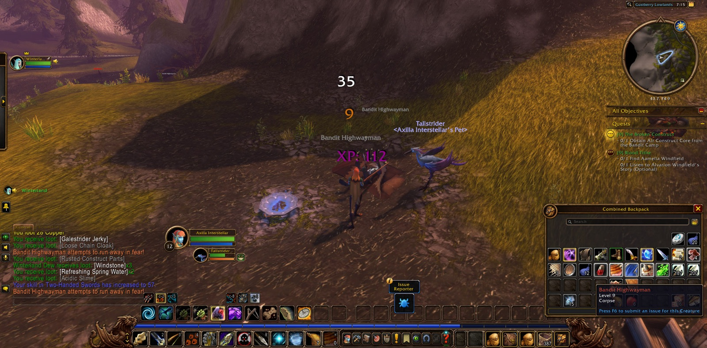
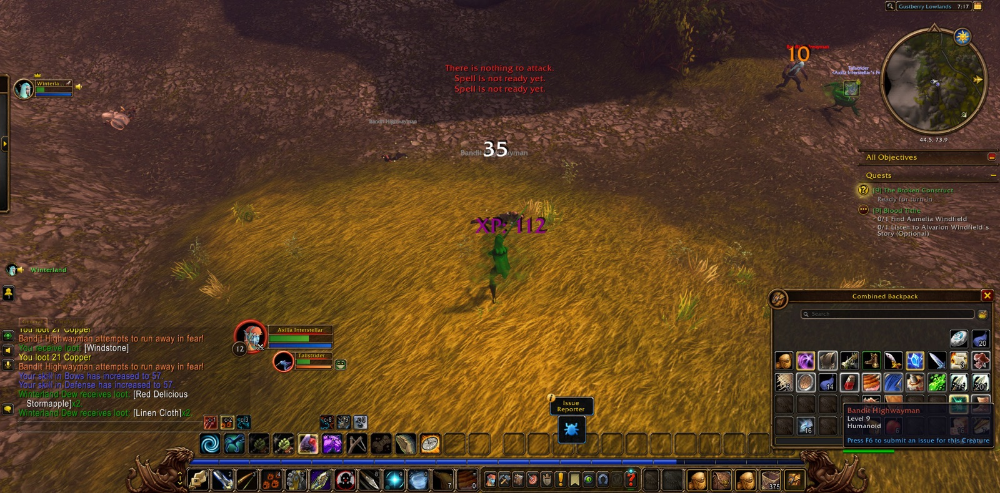
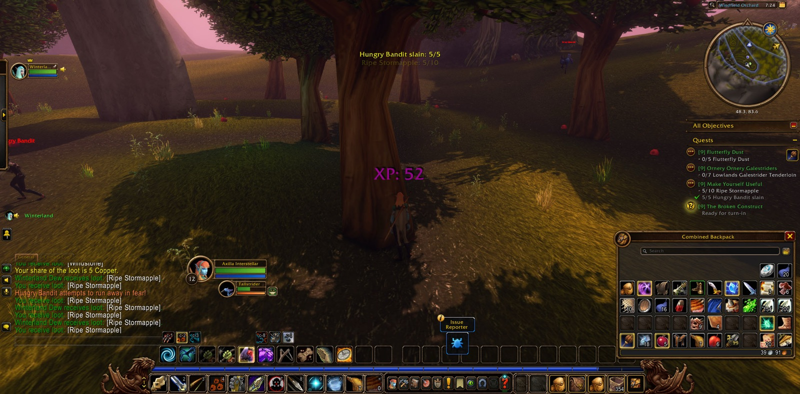
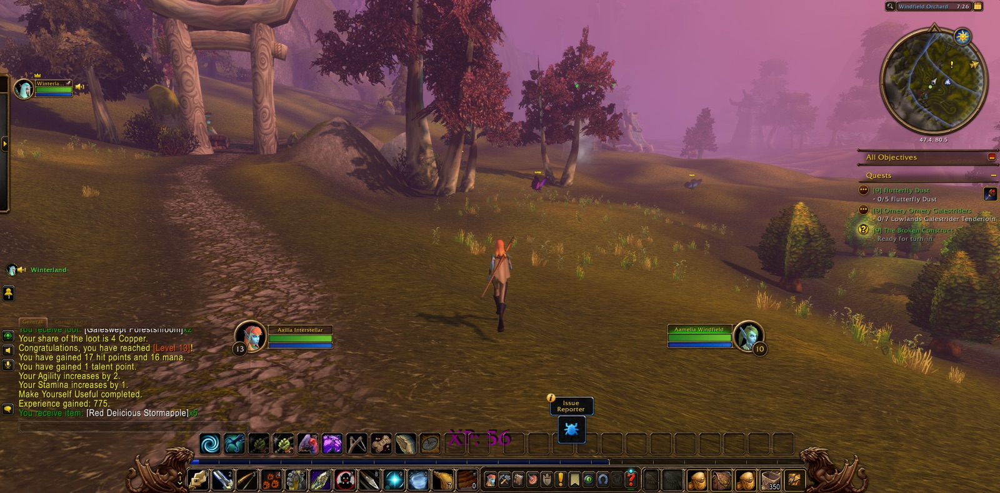
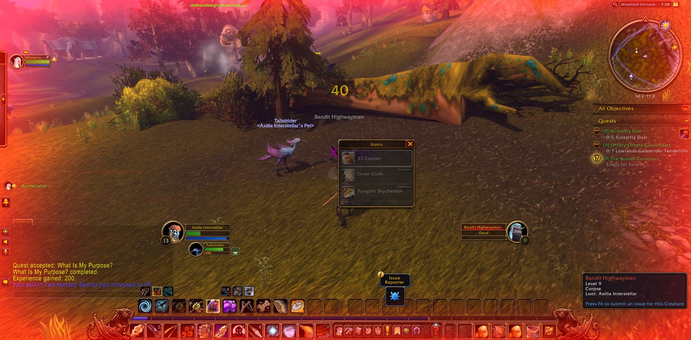
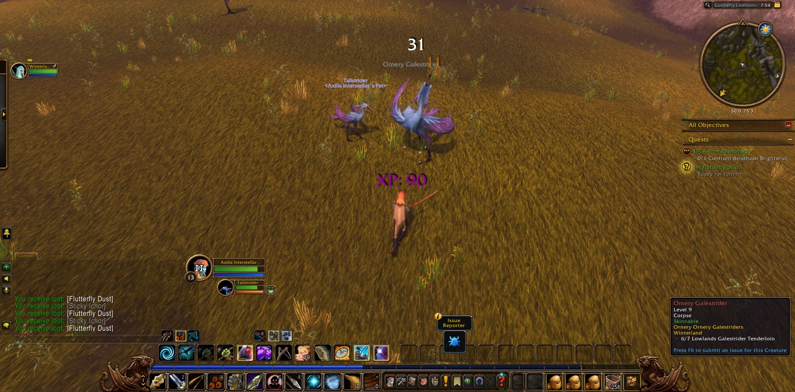